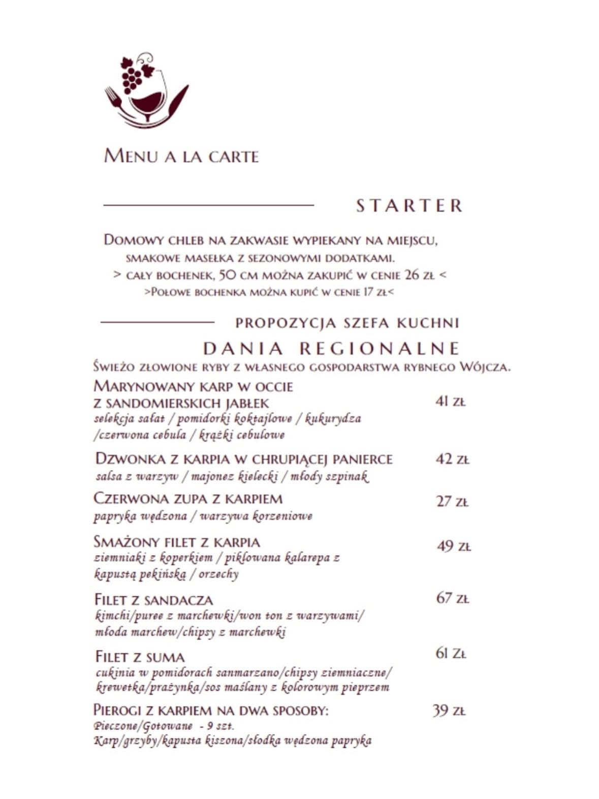

🌾
Lokalnie
Ryby, warzywa, sery i piwa od dostawców z Ponidzia i okolic. Znamy ich z imienia.
Nasza historia
Chleb i Wino to miejsce, w którym prostota składników spotyka się ze starannością wykonania. Bez udawania, bez skrótów — po prostu dobra kuchnia w pięknym wnętrzu.

Miejsce
Restauracja mieści się w podziemiach zabytkowej Willi „Prus” w sercu uzdrowiskowego Solca-Zdroju. Odsłonięta cegła, białe obrusy, świece i ciepłe światło tworzą wnętrze, w którym równie dobrze czuje się para na kolacji, rodzina przy niedzielnym obiedzie i większe towarzystwo na przyjęciu.
Latem zapraszamy również do ogródka — z widokiem na uzdrowiskowy park i spokojem, którego trudno szukać gdzie indziej.
Miejsce bywa trudne do znalezienia z ulicy — wejście prowadzi do podziemi budynku. Jeśli szukasz nas po raz pierwszy, kieruj się na Willę „Prus” przy ul. 1 Maja.
Kuchnia
Nasze ryby nie przyjeżdżają z hurtowni. Sandacz, sum i karp pochodzą z własnego Gospodarstwa Rybackiego Wójcza — to gwarancja świeżości, którą goście wyczuwają na talerzu. Warzywa bierzemy z własnego gospodarstwa, sery ze Strzałkowa, ocet z sandomierskich jabłek, a piwa z regionalnych browarów Ponidzia.
Karta zmienia się wraz z porami roku. Nie boimy się łączyć tradycji z nowoczesnością — karp trafia do pierogów obok kimchi przy sandaczu, a szarlotka wraca na stół w formie dekonstrukcji.
Przygotowujemy też dania dla gości ze szczególnymi potrzebami żywieniowymi — wystarczy uprzedzić przy rezerwacji.

Nasza wizytówka
Wypiekamy go na miejscu każdego dnia — na naturalnym zakwasie, bez pośpiechu. Podajemy go na start ze smakowymi masełkami i sezonowymi dodatkami, ale bardzo wielu gości zabiera bochenek ze sobą do domu.
Cały bochenek 50 cm — 26 zł · połowa — 17 zł
Ceny orientacyjne, mogą ulec zmianie — obowiązuje karta dostępna w restauracji.
Co jest dla nas ważne
Ryby, warzywa, sery i piwa od dostawców z Ponidzia i okolic. Znamy ich z imienia.
Karta zmienia się kilka razy w roku, bo najlepiej smakuje to, co właśnie dojrzało.
Szef kuchni i cała załoga wkładają w gotowanie całą uwagę. To słychać w opiniach gości.
Doradzimy przy wyborze, dopasujemy dania do diety, znajdziemy stolik na ważny wieczór.
Mówią o nas
★★★★★„Nie ma tyle gwiazdek, by ocenić profesjonalizm tej restauracji. Przemiła obsługa, bardzo czysto, a kucharz… chapeau bas.”
Gość Google
★★★★★„Przepyszne jedzenie na bardzo wysokim poziomie wizualnym i smaku. Wyjątkowe miejsce w Solcu, w pięknej zabytkowej willi.”
Gość Google
★★★★★„Podczas pobytu w uzdrowisku chodzimy tu na śniadania i obiadokolacje — i na każdy posiłek jest coś naprawdę pysznego, wybitnego.”
Gość Google
★★★★★„Dawno nie jadłam tak pysznie przyrządzonego karpia. Sandacz w trochę innym stylu, ale smak równie obłędny.”
Gość Google
★★★★★„Bardzo dobre jedzenie, miła obsługa, klimatyczne miejsce. Ciekawy wybór win i piw. Na wynos wzięliśmy bardzo dobry chleb wypiekany na miejscu.”
Gość Google
★★★★★„Porcje dosyć spore, jest kilka ciekawych pozycji do wyboru. Na duży plus zasługuje obsługa — Panie bardzo miłe.”
Gość Google